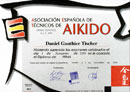

Aikido
Aikido is a Japanese martial art developed by Morihei Ueshiba (often referred to by his title 'O Sensei' or 'Great Teacher'). On a purely physical level it is an art involving some throws and joint locks that are derived from Jujitsu and some throws and other techniques derived from Kenjutsu. Aikido focuses not on punching or kicking opponents, but rather on using their own energy to gain control of them or to throw them away from you. It is not a static art, but places great emphasis on motion and the dynamics of movement.
I started Aikido in 1991 and since then trained with many masters in many different countries. It is a martial art that you can enjoy at any level, there is no competition. Actually, the philosophy of Aikido goes far beyond learning fighting techniques.
The following table lists the belts I have.
Date |
Description |
Diploma |
||
|---|---|---|---|---|
| 2009 A.E.T. AIKI Alicante |
Nidan (2nd dan) |  | ||
| 2006 A.E.T. AIKI Zaragoza |
Shodan (1st dan) |


|
||
{kind=link}
{kind=link}